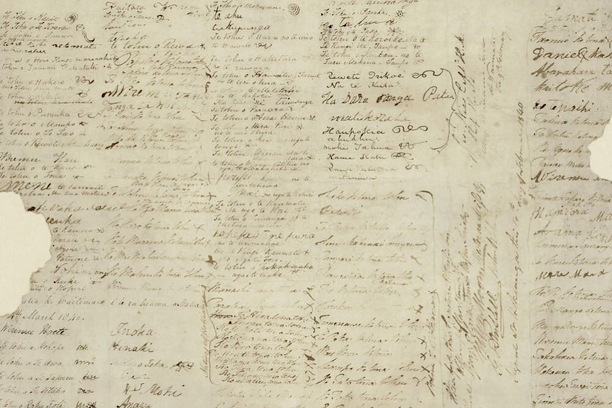
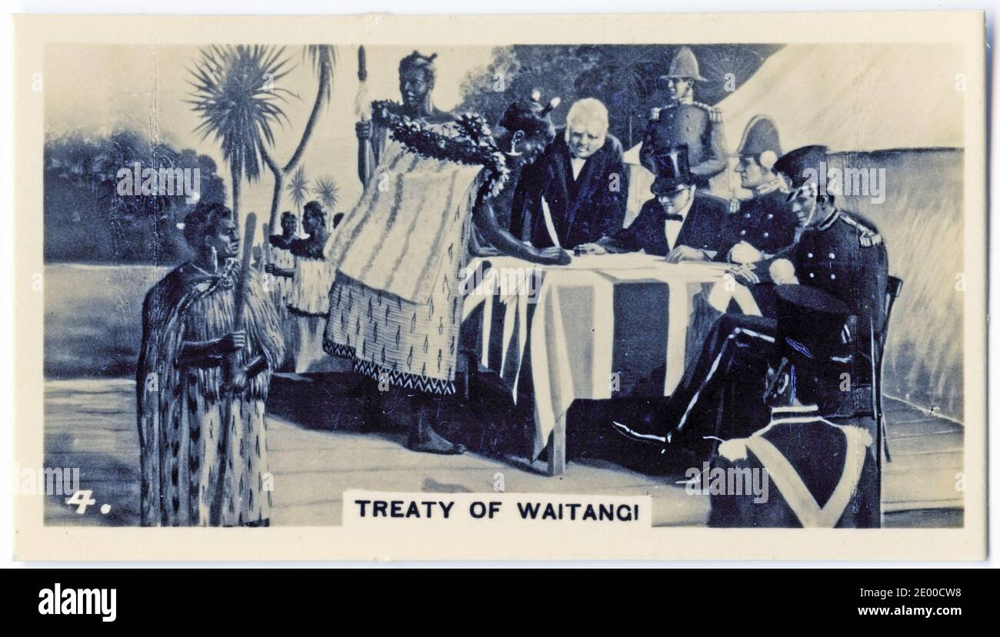
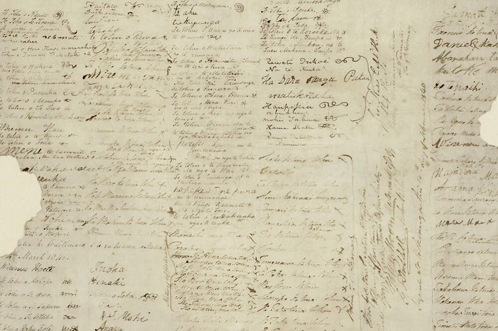
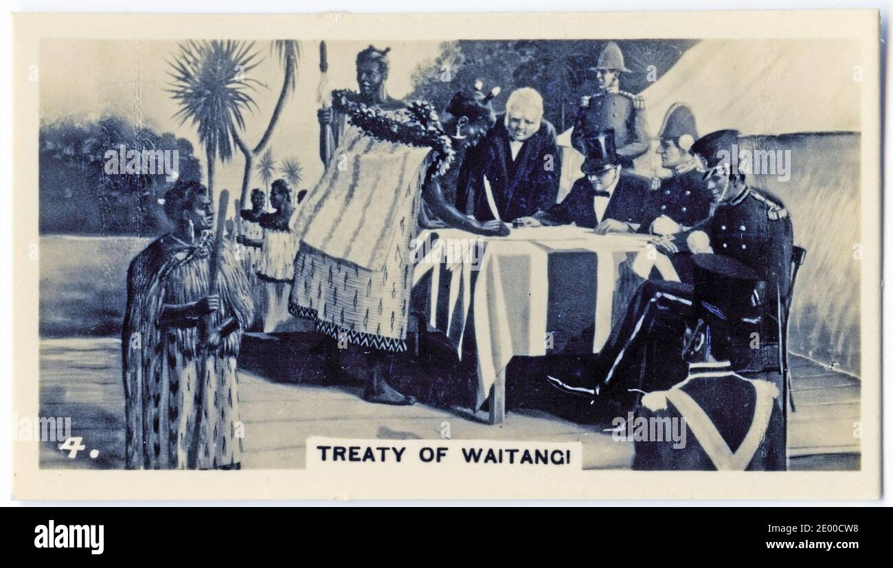
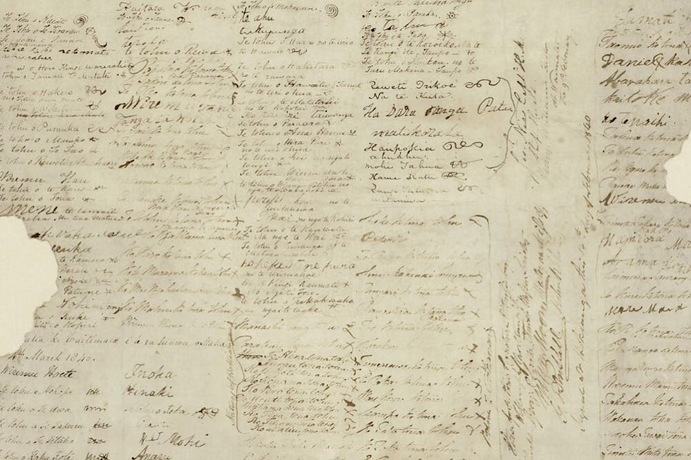
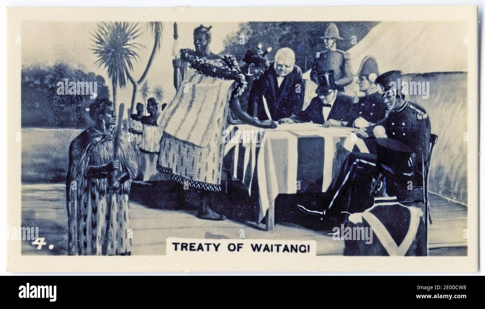
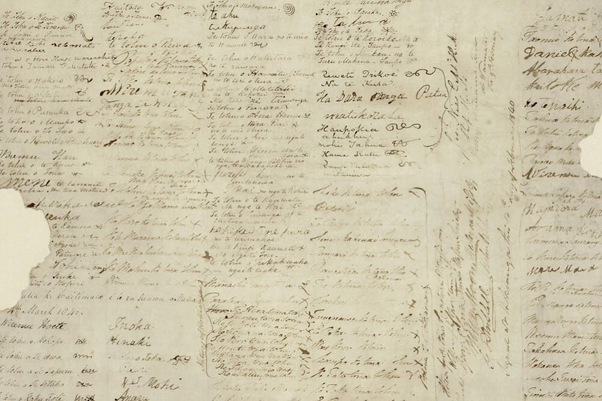
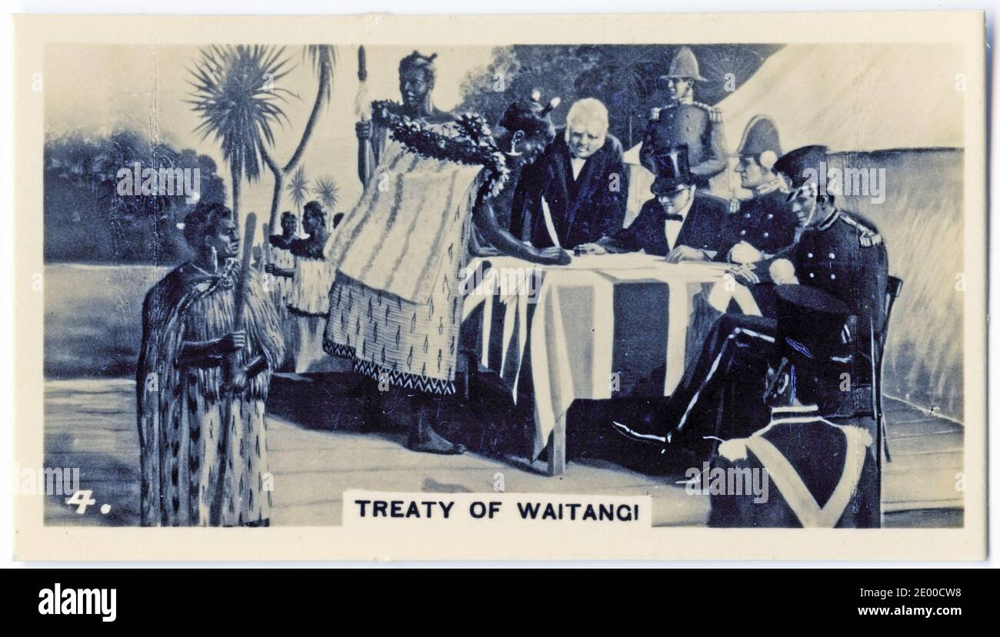

Treaty of Waitangi
- The Treaty of Waitangi (Māori: Te Tiriti o Waitangi), sometimes referred to as Te Tiriti, is a document of central importance to the history of New Zealand, its constitution, and its national mythos. It has played a major role in the treatment of the Māori people in New Zealand by successive governments and the wider population, something that has been especially prominent from the late 20th century. The treaty document is an agreement, not a treaty as recognised in international law,[1] and has no independent legal status, being legally effective only to the extent it is recognised in various statutes.[2] It was first signed on 6 February 1840 by Captain William Hobson as consul for the British Crown and by Māori chiefs (rangatira) from the North Island of New Zealand.



